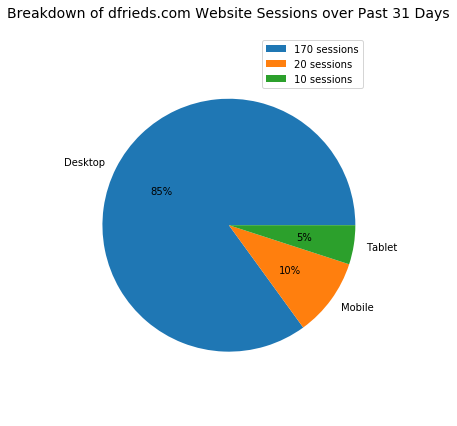

When to Use a Pie Chart
- Jun 10 • 5 min read
- Key Terms: pie chart
Pie charts illustrate relative sizes of data.
There should be a finite and small number of labels.
What is a label? A label is a response value for a data point collected.
For example, let's say we surveyed 50 friends and asked them their favorite type of music. The responses we allow are Hip-Hop, Pop, Country, R&B, Rock, Jazz, Indie and Other. Each response is a type of music and is considered a label.
Below, I'll walk through several practical examples to illustrate the proper use of pie charts.
Import Modules
import matplotlib.pyplot as plt
%matplotlib inline
Example: Favorite Music Responses
To continue with the example above, below is sample of the responses I received:
| Person | Favorite Type of Music |
|---|---|
| Mike | Hip-Hop |
| Julie | Rock |
| Frank | Indie |
Given all my responses, I calculated the total count for each music type and will use this data to create a pie chart.
Record Music Responses in Python Lists
music_type = ['Hip-Hop', 'Pop', 'Country', 'R&B', 'Rock', 'Jazz', 'Indie', 'Other']
count_responses_per_music_type = [26, 4, 2, 2, 6, 2, 2, 6]
In the pie charts legend, I want to include the count of responses for each music type. For each response, I'll create a string and append the word "responses" so I can clearly annotate my pie chart.
count_responses_per_type = [str(response)+ " responses" for response in count_responses_per_music_type]
count_responses_per_type
['26 responses',
'4 responses',
'2 responses',
'2 responses',
'6 responses',
'2 responses',
'2 responses',
'6 responses']
Pie Chart of Favorite Music Type
In the pie chart below, the percentage value of total sessions for each device is calculated automatically by our Python library with the use of autopct argument.
fig = plt.gcf()
fig.set_size_inches(7, 10)
plt.pie(x=count_responses_per_music_type, labels=music_type, autopct='%i%%', radius=15)
plt.title("Favorite Music Responses of My Friends", fontsize=14, y=1.03)
plt.axis('equal') # makes a circle pie chart (not oval)
plt.legend(loc='best', labels=count_responses_per_type)
plt.figure(figsize=(18, 10));

<matplotlib.figure.Figure at 0x10e4d89e8>
Explanation of Music Responses Chart
We can easily tell from the pie chart that the most popular music type of my friends is hip-hop. 51% of my friends said it's their favorite type.
The second most popular music type of my friends is Other and Rock as well as several other types in close running for second.
Example: Website Sessions by Device
On my website, https://dfrieds.com, I use Google Analytics to help me track basic statistics. In the past 31 days, there have been 200 sessions to my site. A session is just a record of someone visiting my site via any device.
Google Analytics tracks what device was used to visit my site; a device could be a desktop computer, mobile phone or tablet.
Below is the data over the last 31 days of visits to my site.
| Device | Number of Sessions |
|---|---|
| Desktop | 170 |
| Mobile | 20 |
| Tablet | 10 |
I want to know what percentage of sessions by each device type are there out of all device type sessions made. Therefore, I must calculate a new column to show the percentage of sessions by device type.
The total number of sessions is 85. For each device type, divide its number of sessions by all device type sessions and multiply by 100. This will give us a new value for percentage of sessions by device type.
These percentage values are the main focus of pie charts.
Device | Number of Sessions | Percentage of Total Sessions --- | --- Desktop | 170 | 85 Mobile | 20 | 10 Tablet | 10 | 5
Record Website Sessions Data in Python Lists
devices = ['Desktop', 'Mobile', 'Tablet']
number_of_sessions = [170, 20, 10]
In the pie charts legend, I want to include the number of sessions for each device. For each value by device, I'll create a string and append the word "sessions" so it's clear.
number_of_sessions_with_units = [str(session_value)+" sessions" for session_value in number_of_sessions]
number_of_sessions_with_units
['170 sessions', '20 sessions', '10 sessions']
Pie Chart of Breakdown of Website Sessons by Device
fig = plt.gcf()
fig.set_size_inches(5, 7)
plt.pie(x=number_of_sessions, labels=devices, autopct='%i%%', radius=7.5)
plt.title("Breakdown of dfrieds.com Website Sessions over Past 31 Days", fontsize=14, y=1.03)
plt.axis('equal'); # makes a circle pie chart (not oval)
plt.legend(loc='best', labels=number_of_sessions_with_units);

Explanation of Website Sessions by Device Pie Chart
The pie chart reveals that 85% of sessions over the past 31 days were viewed on desktop.